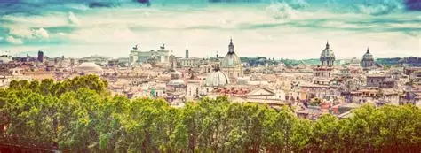
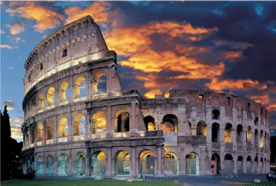
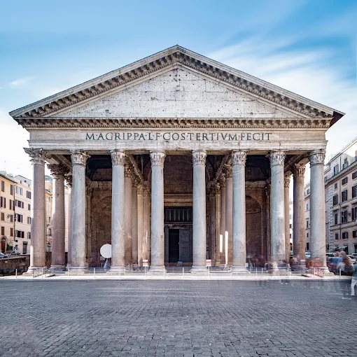
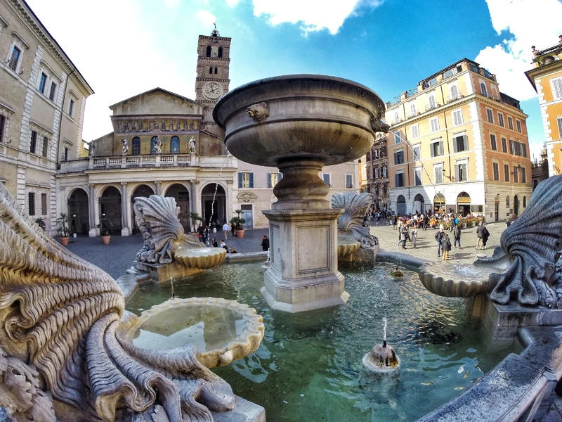

Rzym to piękne miasto
Rzym ::: Kielce ::: Warszawa :::

Moim zdaniem to nie ma tak, że dobrze albo że nie dobrze. Gdybym miał powiedzieć, co cenię w życiu najbardziej, powiedziałbym, że ludzi. Ekhm... Ludzi, którzy podali mi pomocną dłoń, kiedy sobie nie radziłem, kiedy byłem sam. I co ciekawe, to właśnie przypadkowe spotkania wpływają na nasze życie. Chodzi o to, że kiedy wyznaje się pewne wartości, nawet pozornie uniwersalne, bywa, że nie znajduje się zrozumienia, które by tak rzec, które pomaga się nam rozwijać. Ja miałem szczęście, by tak rzec, ponieważ je znalazłem. I dziękuję życiu. Dziękuję mu, życie to śpiew, życie to taniec, życie to miłość. Wielu ludzi pyta mnie o to samo, ale jak ty to robisz?, skąd czerpiesz tę radość? A ja odpowiadam, że to proste, to umiłowanie życia, to właśnie ono sprawia, że dzisiaj na przykład buduję maszyny, a jutro... kto wie, dlaczego by nie, oddam się pracy społecznej i będę ot, choćby sadzić... znaczy... marchew.
Według legendy Rzym założyli bracia bliźniacy – Romulus i Remus. Jako niemowlęta zostali porzuceni, ale wykarmiła ich… wilczyca! 🐺 Potem trochę się pokłócili (jak to bracia), a Romulus został pierwszym królem miasta w 753 r. p.n.e. Rzym stał się centrum potężnego państwa – Cesarstwo Rzymskie. W czasach największej potęgi obejmowało ono ogromne tereny Europy, Afryki i Azji. To właśnie Rzymianie: budowali drogi („Wszystkie drogi prowadzą do Rzymu!”), tworzyli prawo (na którym wzorują się współczesne systemy), wznosili monumentalne budowle.
Koloseum

Koloseum to amfiteatr, budowla zbudowana przez obrócenie i połączenie ze sobą dwóch ruchomych teatrów. Należy do najsławniejszych tego typu obiektów, a jednocześnie symbolizuje władzę cesarską oraz rzymską dominację nad światem, który do dziś można podziwiać w centrum Rzymu
Panteon

Wnętrze Panteonu w Rzymie charakteryzuje ogromna, betonowa kopuła z centralnym otworem, oculusem, będącym jedynym źródłem naturalnego światła, tworzącym niezwykłe efekty świetlne, oraz kasetonowe sklepienie, które odciąża konstrukcję. W środku znajdują się ołtarze, kaplice oraz grobowce słynnych postaci, m.in. włoskiego malarza Rafaela i królów Włoch Wiktora Emanuela II i Humberta I. Podłoga ma wklęsłą centralną część z otworami odprowadzającymi deszcz wpadający przez oculus
Trastevere

Zatybrze to kolorowa awangardowa dzielnica artystyczna o sięgających wiele wieków wstecz robotniczych korzeniach. Słynie z tradycyjnych i nietuzinkowych trattorii, pubów serwujących piwo rzemieślnicze, sklepów z rękodziełem, prostych pensjonatów i niedrogich hoteli. Od wczesnych godzin aż po późny wieczór tłumy młodych ludzi gromadzą się na promenadzie, na placu św. Kaliksta i placu Najświętszej Maryi Panny na Zatybrzu, przy którym mieści się pozłacany kościół z mozaikami.